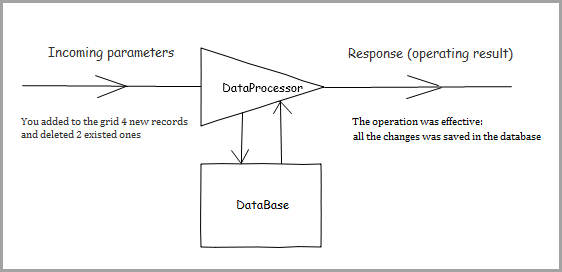

Basic operating principles
If you use php-connectors - please refer to connectors documentation.
The default package contains an example of the server-side code for PHP (by additional request the similar code for JSP|ColdFusion|C#.Net|RybyOnRails can be sent).
In this chapter we'd like to show you dataProcessor in details (the little changed image from the main page will be to the point).
Take an example. You have some data stored in a database and want to represent them in a grid with the editing possibitity. Let's look inside and know what role for dataProcessor is here.

Incoming parameters
First of all, dataProcessor gets the data (all the parameters are part of GET request).
The incoming parameters are:
- gr_id - the id of a row in the grid for which some operation is executed;
- !nativeeditor_status - the status of the operation;
- inserted - the row in a query was added;
- deleted - the row in a query was deleted;
- … any other value … - the row was updated;
- c0 - the data of the first column in the updated row;
- c1 - the data of the second column in the updated row;
….
- cN - the data of the (N+1)th column in the grid.
Response
Then, it processes the incoming parameters, makes all the nesessary operations in database and returns the response.
The response must have the following format:
<data> <action type="some" sid="some" tid="some" /> </data>
Where:
- type - the type of the operation;
- sid - the original row ID (the same as gr_id);
- tid - the ID of the row after the operation (may be the same as gr_id, or some different one - it can be used during a new row adding, when a temporary ID, created on the client-side, is replaced with the ID, taken from the DB or by any other business rule).
There are 5 predefined types of response:
- updated
- inserted
- deleted
- invalid
- error
dataProcessor already contains a logic that defines the default processing of the stated types of response (in other words, actions). You can attach custom handlers to add some extra reaction but, in general, you needn't care about the processing of these actions.
In some cases you may need to return some additional information (the most common use-case - an error during a DB operation). To dispose a problem you can use an additional response type:
function some_error(node) { alert(node.getAttribute("type")); // 'my_error' alert(node.firstChild.data); // Details return false; } dp.defineAction("error",some_error);
Where some_error - a custom function which will be called when the response of “my_error” type is received.
<data> <action type="my_error" sid="id" tid="id">Details</action> </data>